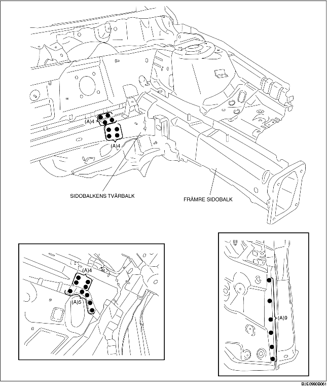
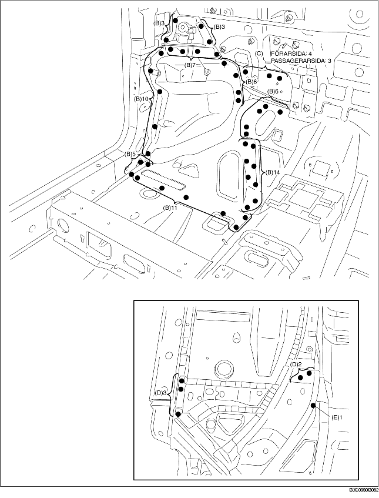
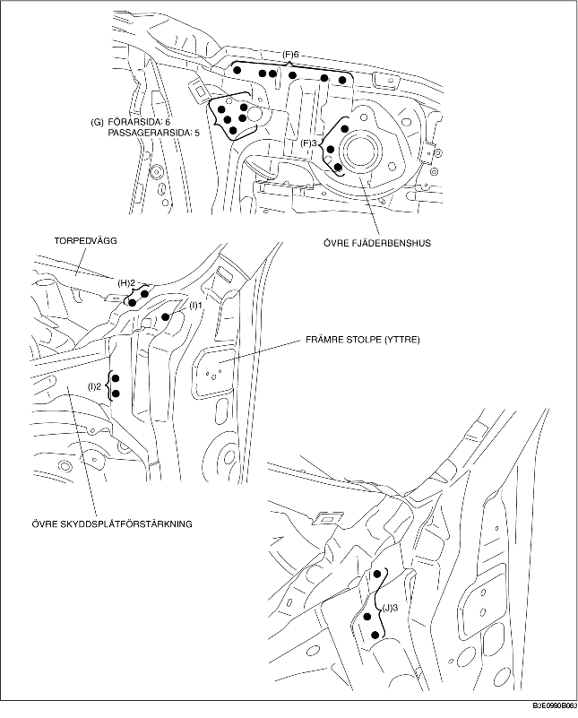

1. Borra de 26 punkter som markeras med (A).

2. Borra de 65 punkter som markeras med (B), 4 punkter på förarsidan som markeras med (C) och 3 punkter på passagerarsidan.
3. Borra de 5 punkter som markeras med (D) nedifrån.
4. Borra den 1 punkt som markeras med (E) nedifrån, eftersom den inte syns inifrån.

5. Borra de 9 punkter som markeras med (F), 6 punkter på förarsidan som markeras med (G) och 5 punkter på passagerarsidan.
6. När den främre sidobalken demonteras, kan gångjärnsstolpen (inre) komma i vägen för skyddsplåtförstärkningen (övre) och försvåra demonteringen. Borra de 2 punkter som markeras med (H), 3 punkter som markeras med (I), och öppna sedan den främre stolpen (yttre) utåt.
7. Borra de 3 punkter som markeras med (J) och demontera den främre sidobalken.
